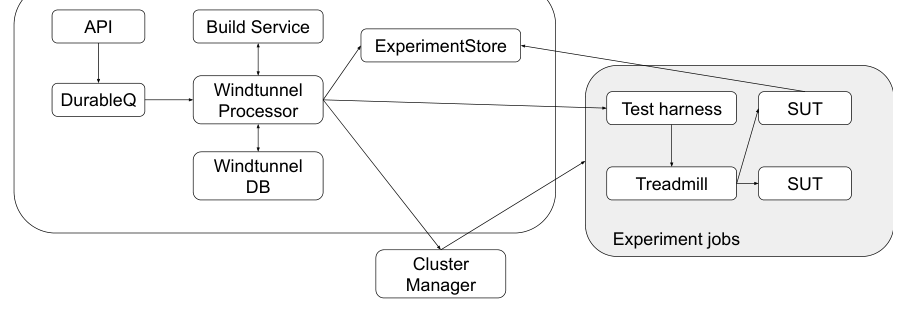
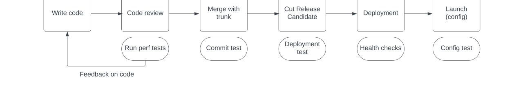
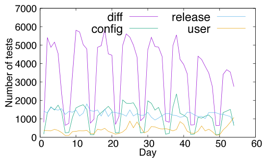
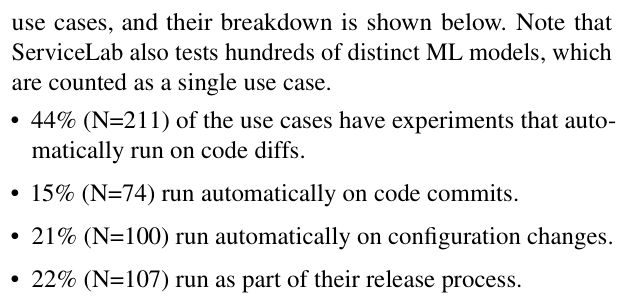
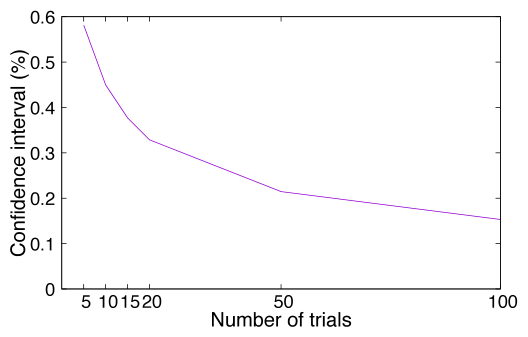

ServiceLab: Preventing Tiny Performance Regressions at Hyperscale through Pre-Production Testing
This page was written by an AI model to give a high-level overview of the paper. Please check the paper for detail: USENIX.
Meta's private cloud serves billions of users from millions of machines, and tens of thousands of engineers commit thousands of code changes a day to live services. A change that regresses CPU or memory usage by even a tiny amount can, multiplied across a fleet of that size, waste a large amount of machine capacity. The paper's running example is FrontFaaS, Meta's PHP/HHVM-based serverless front-end platform: it runs on more than half a million machines, has tens of thousands of developers committing thousands of changes a workday, and ships a new release every three hours, so a 0.01% regression in its aggregate CPU usage already means more than 50 machines, and undetected small regressions in FrontFaaS alone would accumulate to more than one million machines of waste a year if left unchecked.
Two obstacles stand in the way of catching regressions this small before they reach production. First, performance tests must run on many machines in parallel to finish in reasonable time, but cloud-provisioned machines of the same advertised type still vary in performance, due to SSD wear, memory-chip vendor, CPU uncore clock, and similar factors, and that noise can hide a real but tiny regression. A dedicated pool of carefully matched machines removes the noise but needs its own operations team and sits idle between the spiky bursts of test demand, so it is not economical at Meta's scale. Second, Meta runs on the order of a thousand distinct services and ML models, each with its own performance-metric distribution and outlier pattern, so one statistical test tuned for one service produces too many missed regressions or false alarms on another.
ServiceLab's answer is to accept that test machines will never be identical and to compensate with measurement and statistics instead. It selects "nearly identical" machines using a small number of factors, ServerType, CPU architecture, and kernel version, plus datacenter region and CPU turbo state for real applications, chosen because a large-scale ANOVA (analysis of variance) study on millions of past test records shows they explain almost all of the cross-machine performance variance that ServiceLab can control at allocation time. On top of that matched-but-not-identical environment, ServiceLab runs an ensemble of statistical regression-detection models (a t-test, a permutation test, and a confidence-interval test built from historical A/A data, each with optional data preprocessing) and automatically picks, per service and per metric, whichever model has the best measured false-positive, false-negative, and detectability tradeoff, re-checking that choice periodically as the service evolves.
Mechanically, a test is a record-and-replay experiment: production RPC traffic recorded transparently from Meta's Thrift RPC layer is replayed by a modified version of the open-source load generator Treadmill against two instances of the system under test (SUT), one with the code change and one without, on machines allocated from the shared cloud and matched on the factors above. Because fully isolating a service's hundreds of downstream dependencies is often impractical, for example replicating the social graph for billions of users, the SUT is usually allowed to call real downstream production services directly, relying on most such calls being read-only or idempotent; calls with side effects are mocked, redirected to test resources, or blocked. An orchestration engine called Windtunnel moves each experiment through queued, build, allocation, running, and analysis phases, and a service called Experiment Store applies the chosen statistical model to the collected metrics.
After seven years in production, ServiceLab tests about 1,000 diverse services and ML models whose production footprint totals millions of machines, and covers more than half of all code changes made at Meta, more than all other specialized testing platforms combined. For FrontFaaS it runs with a CPU-regression threshold as low as 0.01%, flags regressions on 0.3% of the changes it tests, and the median confirmed true regression it catches is 0.14% of FrontFaaS's CPU usage; regressions under 1% that it caught over five years sum to the equivalent of more than two million machines. Its measured false positive rate for FrontFaaS is about 21%, which, combined with how rarely diffs are flagged at all, works out to roughly one false positive every 20 developer-years.

Key takeaways
- ServiceLab is Meta's pre-production performance-testing platform: about 1,000 services and ML models, covering more than half of Meta's code changes, with seven years of production history.
- Core problem: cloud test machines of the same type are not identical, and no single statistical test fits every service's noise profile.
- Machine selection: an ANOVA study on millions of records shows ServerType, CPU architecture, and kernel version, plus datacenter region and CPU turbo for real apps, explain most of the controllable variance, so ServiceLab allocates matched-but-not-identical machines instead of maintaining a dedicated identical pool.
- Regression detection: an ensemble of statistical models (t-test, permutation test, confidence-interval test, with optional preprocessing) is picked per service and metric using periodic A/A tests and injected artificial A/B tests as ground truth.
- Headline numbers: FrontFaaS uses a 0.01% threshold, catches a median 0.14% regression at about a 21% false positive rate (about one false positive every 20 developer-years), and its small caught regressions sum to more than two million machines over five years.
From a noisy shared cloud to a 0.01% regression signal
Where tests sit in the development workflow, how ServiceLab tames machine variance, how it detects tiny regressions statistically, and how the system is built.
1 · Where performance tests sit in the development workflow
Meta stores all project code in one monorepo. A developer clones it, makes local changes, and submits the change as a "diff" for peer review; both functional and performance tests run automatically on the diff. Once approved and committed, post-commit tests run again. On a schedule, a continuous-deployment tool compiles a release candidate (RC) and tests it against the executable currently in production before deploying it in stages with ongoing health checks. A common pattern uses a remote "gate" configuration parameter to toggle a new code path on or off without a new release, and ServiceLab also tests gate (configuration) changes.

ServiceLab therefore participates at four points: the review-time test (on the diff before merge), the commit test (post-commit, compared against trunk), the deployment test (release candidate against production before staged rollout), and the config test (before a gate is toggled broadly). The rest of this tab covers only performance tests, even though the same workflow also runs functional tests.
2 · Why the detection threshold has to be so strict
The paper separates performance differences between an A/B test's two sides into three sources: accidental variance from the code's own random factors (such as lock-contention timing), environment variance from differences in the test environment (CPU generation, kernel version, and so on), and true regression in the code change. The goal is to suppress the first two so that the third becomes visible. Because FrontFaaS consumes more than half a million machines and accumulates tens of thousands of diffs a month, the paper argues that tolerating anything above roughly 0.01% would let small regressions compound unnoticed over time into a large capacity loss, which is the justification for pushing detection this low rather than a general claim that all services need such a strict threshold.
3 · Selecting "nearly identical" cloud machines
ServiceLab classifies physical machines at three levels of granularity: ServerType (tens of coarse categories, such as single-CPU general-purpose or GPU training machines), ServerSubType (adds RAM size and CPU architecture, O(100) distinct values), and ServerModel (the specific model of every major component, over 10,000 distinct values). Users normally request machines by ServerType; ServerSubType is discouraged because it limits the cloud's flexibility, and ServerModel cannot be requested directly.
To find which factors matter, the authors ran an ANOVA (analysis of variance) study over two datasets: the Release to Production (RTP) dataset of 21.5 million CPU/memory microbenchmark records across diverse hardware, and the ServiceLab dataset of 186,000 records from real production applications on less diverse hardware.
| Factor set | Dataset | R² (variance explained) |
|---|---|---|
| ServerModel + kernel version (approximate upper bound) | RTP, CPU benchmark | 0.89 |
| ServerModel + kernel version (approximate upper bound) | RTP, memory benchmark | 0.97 |
| ServerType + CPU architecture + kernel version | RTP, CPU benchmark | 0.87 |
| + CPU turbo state + datacenter region | ServiceLab (real apps) | up to +0.23 over the 3-factor subset |
| + CPU turbo state + datacenter region | RTP (microbenchmarks) | only +0.01 |
So three factors already available at allocation time, ServerType, CPU architecture, and kernel version, approach the explanatory power of a near-complete hardware descriptor. Turbo state and datacenter region matter mainly for real applications because they have external dependencies (for example, a downstream production database whose own performance varies by region), which synthetic microbenchmarks do not have. RAM vendor and RAM speed turned out to have little effect even on memory benchmarks. The paper also found that specific CPU models and kernel versions carry disproportionately more variance (measured as Coefficient of Variance, CoV): one CPU model had a 42% CoV against a fleet median of 19%, and one kernel version had a 52% CoV against a median of 36%; ServiceLab avoids scheduling tests on the highest-variance CPUs and kernels. How well this matching performs against true single-machine repeatability is covered in the Evaluation tab.
4 · Detecting small regressions statistically
A trial is one A/B comparison; an experiment is made of multiple trials; an A/A test compares two runs of the same code and is used to calibrate the system rather than to test a real change. ServiceLab combines a statistical test method with a data preprocessing method into what it calls a model:
- Student's t-test, used when an experiment has a single trial, to test whether the A-side and B-side means differ significantly.
- Permutation test, used with multiple trials: it computes the per-trial mean difference across all trials, then estimates a p-value by comparing the observed mean difference against many randomly permuted samples of the same data.
- Confidence-interval test, which instead of inferring a distribution from the current experiment's limited trials, builds the distribution of mean(A′) − mean(A) from two weeks of historical A/A tests, derives a confidence interval from it, and checks whether mean(B) − mean(A) falls inside that interval.
Preprocessing options are a square-root transformation (to stop a few very expensive requests from dominating a trial's mean, improving accuracy for high-demand services) and outlier handling (deleting or capping values above a percentile, a form of winsorization). ServiceLab currently uses seven standard test-method/preprocessing combinations plus some service-specific models.
5 · Recording and replaying production traffic
All Meta services use the Thrift RPC protocol. The Thrift server's recording module flips a coin on each request to a configured container to decide whether to sample it; recorded data is written asynchronously to avoid adding latency. The median sampling rate across services is 0.03%, with 22% of services sampling at 1%. Services whose request rate is highly variable use reservoir sampling to spread at most K samples evenly over each interval T, rather than skewing toward bursty periods.
- By default ServiceLab assumes requests are independent; services whose requests depend on each other can instead record and replay the full sequence in order.
- For sharded services, sharding happens above the RPC layer, so the service owner specifies which containers capture traffic for each shard.
- Replay is done by a modified version of the open-source load tester Treadmill, extended to load recorded requests from a datastore and replay Thrift calls, and to keep A/B pacing consistent: a single Treadmill instance loads one set of requests and synchronizes delivery so both the A side and B side receive them simultaneously.
- For capacity-mode tests, a control loop in the test harness instructs Treadmill to raise the replay rate until the SUT violates a service level objective (SLO), to find maximum sustainable throughput.
- Services with a warm-up period (for example HHVM's just-in-time, JIT, compiler needs to warm up) export a counter; ServiceLab detects approximate steady state with an exponential moving average, discards pre-warm-up data, and synchronizes both A and B sides before measuring.
6 · Handling service dependencies and side effects
Full self-contained test environments are possible in ServiceLab but not always practical, since replicating massive datasets such as the social graph for billions of users per test run is economically impractical. So the SUT is usually allowed to call downstream services that are actually running in production.
- Most such calls are safe because they are read-only or idempotent, and the extra test load is negligible against production traffic from billions of users.
- For calls that would have side effects, a shim layer in client libraries drops writes to production databases, caches, and data warehouses by default while still allowing reads; a mock framework lets the SUT redirect writes to a test resource instead.
- For generic RPC calls where read/write side effects are not easy to infer automatically, the RPC layer blocks calls to production services by default, and the service owner supplies an allow-list of calls that may proceed.
- Business and performance metrics logged by the test instance are kept in separate stores from production metrics so they do not interfere with each other.
Blocking or mocking some calls can prevent certain code paths from executing during a test, which can produce false negatives; the Evaluation tab discusses how the paper judges this cost. For sharded, stateful services like LASER, the service is first disconnected from its live shard-assignment control plane and told to load specific shards, and replayed requests have a matching shard-ID header injected so they are not rejected.
7 · System architecture and the experiment lifecycle
An experiment moves through five phases: queued, build, allocation, running, analysis.
- A user or automation tool submits a request through the Windtunnel API, which enqueues it in a durable queue (DurableQ) and creates a Windtunnel DB entry marked queued.
- One of several independent processors polls the queue, claims and locks the entry, validates input, and transitions it to build, where a separate caching build service compiles the needed executables (avoiding duplicate builds across experiments).
- In the allocation phase, the processor checks each team's machine quota, selects a datacenter region with enough remaining quota, and filters candidate machines by ServerType, CPU architecture, and kernel version (Section 3) to minimize cross-machine variance. It allocates jobs for each side of the A/B test plus a traffic-replay job and a test-harness job.
- In the running phase, any configuration canary needed for a config test is set up, the traffic-replay job loads recorded requests, and the test harness starts the test, continuously checking health checks on all jobs while the SUT exports metrics to monitoring databases.
- After the test completes, the processor deallocates jobs and moves the experiment to analysis, where a service called Experiment Store aggregates metrics, applies the chosen statistical model, and writes results back to the Windtunnel DB; results can trigger actions such as blocking a release.
8 · Registering a service and choosing a test mode
To onboard a service, its owner supplies: the trigger criteria for running a test, a container manifest describing the executable and how to set up its containers, the metrics to aggregate and failure conditions, a traffic-recording configuration, and the replay rate. ServiceLab then supports three usage modes: efficiency mode measures a change's impact on metrics such as latency or CPU/memory usage; capacity mode uses the incremental-load control loop from Section 5 to measure a change's impact on maximum sustainable throughput; hardware mode compares the same code running on different hardware. The design deliberately leaves room for owner customization (for example choosing synthetic traffic instead of record-and-replay) rather than forcing one rigid setup on every service, because the paper's experience is that a fully automatic, zero-effort solution would only work for a small fraction of Meta's services. Results and production accuracy are covered in the Evaluation tab.
Evaluation
Machine-variance measurements, use-case diversity, and seven years of detection accuracy in production, as reported in the paper.
The evaluation is an analysis of ServiceLab's own production operation rather than a controlled comparison against another testing system. It draws on two large historical datasets for the machine-variance study, a 54-day window of live ServiceLab usage for non-FrontFaaS services, a two-month window of periodic A/A experiments, and five years of FrontFaaS production history.
| What | As stated in the paper |
|---|---|
| Platform | Meta's private cloud, running workloads in Linux containers (not VMs) |
| Variance-study data | RTP dataset: 21.5M CPU/memory microbenchmark records; ServiceLab dataset: 186K real-application test records |
| Workloads | FrontFaaS (HHVM serverless platform, >500K machines) reported separately; 483 other use cases including LASER, MLPredictor, DataAggregator, XFinder, Ranker, and hundreds of ML models |
| Baselines | Periodic A/A tests (same code vs. itself, every 2 hours) for false-positive calibration; artificial A/B tests (A/A with injected regression) for false-negative calibration; FrontFaaS's independent per-function production monitoring system for an external false-negative check |
| Metrics | Service-specific metrics such as CPU usage, anonymous memory usage, SSD usage, maximum request rate, and application metrics (error counts, items returned, latency); FrontFaaS results are labeled true/false positive by developer action on regression tickets |
Three allocation-time factors capture nearly all the variance an upper-bound model can explain
| Factor set | Dataset | R² |
|---|---|---|
| ServerModel + kernel version (upper bound) | RTP, CPU benchmark | 0.89 |
| ServerType + CPU architecture + kernel version | RTP, CPU benchmark | 0.87 |
| + turbo state + datacenter region | ServiceLab (real apps) | up to +0.23 |
What it shows. The paper's ANOVA analysis on the RTP dataset finds that a near-complete hardware descriptor (ServerModel) plus kernel version explains 89% of CPU-benchmark variance, and a much smaller three-factor subset (ServerType, CPU architecture, kernel version) still explains 87%. On the ServiceLab dataset of real applications, adding CPU turbo state and datacenter region raises R² by up to 0.23, but on the RTP microbenchmarks the same two factors add only about 0.01.
What to take from it. Three factors already visible at cloud-allocation time recover almost all the variance a near-complete hardware fingerprint could explain, which is why ServiceLab can match machines on allocatable factors rather than pinning exact hardware models. Turbo and region matter specifically for real applications because of their external dependencies, not for isolated microbenchmarks, so the paper's factor set is tailored to real production traffic rather than synthetic load.
Matched-but-different machines perform almost as consistently as one repeated machine, except in the tail
| Test type | CoV at P50 | CoV at P99 |
|---|---|---|
| Same machine, repeated | 5.9% | 28% |
| Similar machines (matched factors) | 5.7% | 38% |
What it shows. Using the RTP dataset with CPU turbo disabled, the paper compares the Coefficient of Variance (CoV, standard deviation divided by mean) of repeated tests on one physical machine against tests on different machines matched on ServerType, CPU architecture, kernel version, and datacenter region.
What to take from it. Median variance (P50) is nearly identical between the two regimes, so factor-based matching recovers most of the benefit of a dedicated identical machine pool while allowing tests to run in parallel on a shared cloud. The gap widens at the P99 tail (28% versus 38%), meaning occasional outlier runs are still noisier across matched machines than on a single machine, a cost the paper judges acceptable given the speed gained from parallel testing.
FrontFaaS's confirmed regressions are individually small but accumulate to millions of machines

What it shows. Figure 3 is the cumulative distribution of regression size among changes flagged by ServiceLab in FrontFaaS and confirmed by developers as true positives. The paper reports a median (p50) of 0.14%, p90 of 1.7%, and p99 of 38.7%.
What to take from it. Typical confirmed regressions are small, well under what casual testing would flag, yet summing only the regressions under 1% caught over five years totals 545% of FrontFaaS's capacity, equivalent to more than two million machines; the paper explicitly excludes very large outliers (near the p99 value) from this sum because those are usually caused by experimental, not production, changes. This accumulation argument is the paper's justification for a 0.01% detection threshold.
Across 483 use cases, threshold and trial count vary enormously, and the strictest settings belong to the largest services

What it shows. Figure 5 plots, for each of the 413 non-FrontFaaS use cases with a defined relative threshold, its regression threshold against its number of trials, with circle size indicating how many use cases share a given setting. The paper reports threshold values of p50=5%, p90=10%, p99=20% (23% of use cases below 1%), and trial counts of p50=1, p90=10, p99=10, p100=25.
What to take from it. Most use cases are satisfied with a relaxed threshold and a single trial, but a small subset, which the paper notes includes many of the largest services, runs up to 25 trials to reach a much stricter threshold. This confirms there is no single right configuration across Meta's services and supports letting each use case choose its own threshold and trial count rather than imposing a platform-wide default.
More trials shrink the confidence interval needed to see a small regression

What it shows. For one example service, Figure 6 plots how the 95% confidence interval for regression detection, derived from repeated A/A tests and assuming a normal distribution (two standard deviations), narrows as the number of trials increases.
What to take from it. This curve is the mechanism the paper describes for choosing a trial count: a service owner runs a preliminary sweep of A/A tests, reads off the confidence interval at different trial counts, and picks the smallest trial count that reaches their desired detection threshold, trading machine-time and test duration for sensitivity. This is how several of the trial counts seen in Result 4 were likely chosen, though the paper presents it for one illustrative service, not as a universal curve.
At a 0.01% threshold, FrontFaaS keeps a developer-facing false positive rate low enough to stay trusted
| Developer classification | Share | Count |
|---|---|---|
| True positive | 57% | 3,173 |
| False positive | 15% | 823 |
| Unknown | 28% | 1,564 |
What it shows. ServiceLab ran at least one experiment on 23% of roughly 100,000 monthly FrontFaaS changes and signaled a regression on 0.3% (5,560) of those tested changes. Developers' resolution of the resulting tickets gives the breakdown above; treating unknowns as having the same false-positive rate as classified tickets yields an overall false positive rate of about 21%. Multiplying through (23% tested × 0.3% signaled × 21% false positive) gives a per-diff false positive rate of 0.014%, about once every 20 years for a developer submitting one diff a day. Cross-checking against FrontFaaS's separate per-function production monitoring system found 2,038 (0.02%) of changes causing regressions that ServiceLab missed, a false negative rate of about 32% (this figure carries the caveats the paper notes below).
What to take from it. A 21% false-positive rate sounds high in isolation, but combined with how rarely any given diff is flagged at all, it produces a good per-developer experience, which the paper argues is what keeps developers taking ServiceLab's tickets seriously instead of learning to ignore them. The 32% false-negative estimate depends on an external, imperfect production monitoring system and excludes regressions that could not be root-caused to a specific change, so the paper presents it as an approximation, not a precise bound.
FAQ
Q·What problem does ServiceLab solve that ordinary CI performance testing doesn't?▾
Most CI performance testing assumes either dedicated identical machines or thresholds loose enough to ignore machine noise. ServiceLab targets a harder point on that tradeoff: catching regressions as small as 0.01% while running on a shared, heterogeneous cloud, at a scale (thousands of daily changes, millions of machines in production) where even that tiny threshold matters.
Q·Why not just use a dedicated pool of identical machines for testing?▾
The paper tried this early on. It removes machine-to-machine noise but requires an operations team to maintain, and testing workload is spiky, so a fixed pool sits idle much of the time; using the cloud's elastic (and sometimes reclaimable "Elastic Server") capacity on demand is cheaper. ServiceLab instead provisions a batch of machines, keeps a "nearly identical" subset based on a few key factors, and returns the rest.
Q·How does ServiceLab pick "nearly identical" machines from a shared cloud?▾
It filters allocation requests by ServerType, CPU architecture, and kernel version, and for real applications also by datacenter region and CPU turbo state. An ANOVA study on millions of records shows this small set explains almost as much performance variance as a near-complete hardware fingerprint would, so it is a practical, allocatable approximation rather than true identity.
Q·Why does regression detection need statistical tests instead of just comparing two numbers?▾
Because even matched machines and repeated runs show real variance (accidental variance from the code's own randomness, plus residual environment variance), a single A/B comparison can look different just by chance. Statistical tests estimate how likely an observed difference is to be noise versus a real effect, which is necessary to catch regressions near 0.01% without drowning in false alarms.
Q·What is the difference between a trial and an experiment?▾
A trial is one A/B run. An experiment is made up of one or more trials run for the same code change; services with high required precision run more trials per experiment. An A/A test is a trial or experiment comparing the same code against itself, used only to calibrate the statistical models, not to test a real change.
Q·How does ServiceLab decide which statistical model to use for a given service?▾
It periodically runs real A/A tests and synthetic artificial A/B tests (A/A tests with an injected regression) to build ground truth, scores each candidate test-method-plus-preprocessing combination on measured false positive rate, false negative rate, and detectability, and picks the best-scoring model subject to a false-positive ceiling. This repeats periodically since the best model can change as a service's code evolves.
Q·How does record-and-replay testing work here, and why not use synthetic benchmarks?▾
ServiceLab samples live production RPC traffic (via Thrift) and replays it later against a modified instance of the service using Treadmill. The paper prefers this over synthetic benchmarks because it reflects the true mix and skew of real production requests, which is hard to construct synthetically for diverse, constantly changing services, though synthetic traffic is still supported for services that prefer it.
Q·If the system under test calls real production services, doesn't that risk corrupting production data?▾
Most downstream calls made during a test are read-only or idempotent, so they carry no risk, and the extra load from tests is negligible against production traffic from billions of users. For calls that could have side effects, ServiceLab defaults to dropping writes via a shim layer, offers a mock framework to redirect writes to test resources, and lets the RPC layer block any call not on an explicit allow-list.
Q·How does DiffSuggester decide which code changes to test?▾
It walks the compiler's abstract syntax tree to find functions a diff modifies, scores each function's likely global cost using production profiling data (execution frequency times per-invocation resource use), sums those scores into a diff-level impact score, and runs an experiment only if that score exceeds a threshold set from available testing capacity. It also uses the same profiling data to pick which application endpoints' traffic to replay.
Q·Why is a 0.01% regression threshold meaningful at all, given normal measurement noise?▾
Only because the variance-reduction work (machine matching) and statistical modeling (Sections 3 to 4 of the paper) are aggressive enough to make such a small signal distinguishable from noise with acceptable false-positive rates. The paper justifies the threshold itself by showing that regressions below 1% accumulated to more than two million machines of FrontFaaS capacity over five years.
Q·What causes most false positives and false negatives in practice?▾
The paper's experience is that false positives mostly come from some other concurrent event, such as another test or a deployment in the SUT or a downstream service, disrupting the test's result; one documented case traced a spate of false positives to an unrelated production load-imbalance bug in a downstream service. False negatives mostly come from new features being exercised by request types that were not present in the traffic recorded before the feature existed.
Q·Does ServiceLab replace production monitoring?▾
No. It is a pre-production, pre-deployment check. The paper explicitly uses FrontFaaS's separate in-production monitoring system (which watches per-function CPU usage) as an independent check to estimate ServiceLab's false-negative rate, meaning the two are complementary, not substitutes for each other.
Q·Does this approach generalize to public clouds?▾
The paper recommends using bare-metal instances rather than virtual machines in a public cloud, reasoning that even low-overhead hypervisors may add performance variability beyond bare metal. It states plainly that it has not validated the method in virtualized environments, so this recommendation should be read as the authors' extrapolation, not a tested result.